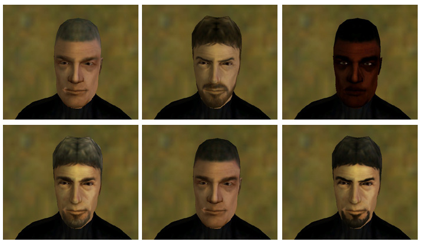
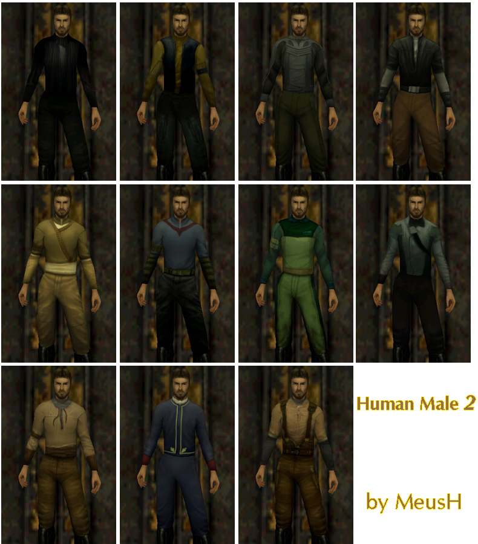
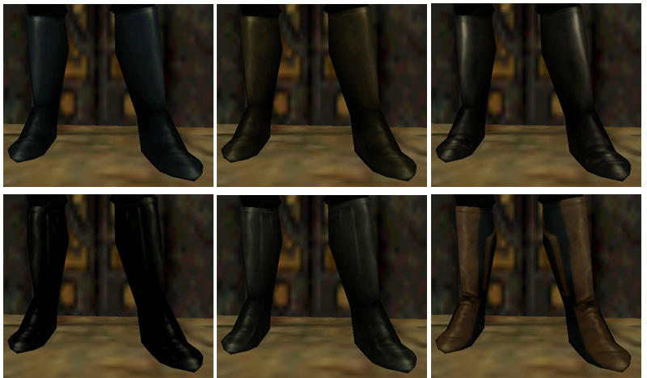

Human Male 2


Human Male 2
This mods adds new species. Human Male 2 (because there already is one Human Male)
There are avaible:
6 heads
11 torsos
6 legs
This mod is SP and MP compatibile.
There will be new versions with more skins.


